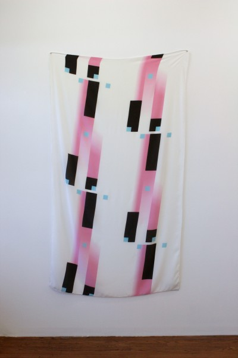
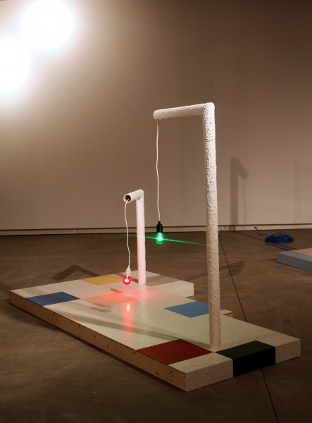
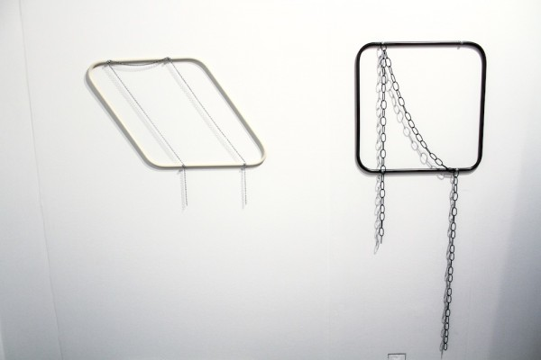

-
Mediated Parallelogram, Mediated Square
by Monica Uszerowicz March 13, 2013
Song’s Deco Rerun, 2012. courtesy of the artist.
In Dialogues with Marcel Duchamp, the titular artist told writer Pierre Cabanne:
I shy away from the word ‘creation’… on the other hand, the word ‘art’ interests me very much. If it comes from Sanskrit, as I’ve heard, it signifies ‘making.’
This is the same Duchamp to whom the quote ‘I consider painting as a means of expression, not as a goal,’ is attributed. The same Duchamp whose readymades challenged the understanding of pre-made pieces in gallery settings.
Chicago-based artist Min Song takes cues from the great, and from these quotes in particular, with her surprisingly solemn installations. Drawing from a wealth of history — of design, of architecture, of spaces both domestic and institutional — Song constructs small cross-sections of different architectural realms. We view what Song describes as ‘a struggle with site-specificity, in which I see dogmatic and ethical problems.’ For Song, ‘the transference of certain physical moments as present in a room to an object’ occurs when the object and the room are symbolically synchronized, ‘speaking similar languages.’ She references shelving, surfaces, lighting and decorative embellishments of the home, and morphs them into abstract forms that become almost painterly in their display. A dangling light bulb in a home is purely functional. Removed from its typical setting, Song seems to ask us to ponder and ultimately revere it.
Hence her work’s aforementioned solemnity: asked to view something like the triangular structure (is it a bookshelf?) of Display Function, or a portion of vinyl flooring in Marlene, as paintings, the everyday objects that serve as her media are transformed. The heart of each installation is their function as homages, commanding both inspection and appreciation. It makes sense, given her background — she was a painting major at Chicago’s Art Institute, and if painting is a classical art form, Song can make the most abstract shapes classic in presentation. A resident at the Miami-based Michael Jon Gallery, Song was featured in the gallery’s booth at the New Art Dealers Alliance (NADA) fair during Art Basel Miami Beach last year. Over e-mail, prior to the show, she explained that her construction of art objects — somehow connected to real objects in the world — ‘is a way of memorializing the things that are outside of myself, but still exist in the world in physical terms. Duchamp’s urinal — the memorialized, in this case, to me is a creepy doppelganger of the urinals that bear its likeness. That’s a good space to think about changes in functionality.’
Song’s Clementine, 2012. courtesy of the artist.
Song often expresses this literally (as in the instance of Duchamp’s urinal). Take Clementine — in which chunkily-textured PVC pipes house Christmas-color light bulbs, and dangle above vinyl-tiled cafeteria floor. The piece is easily an icon of a real-world living room. Accompanying her works are photographic or otherwise two-dimensional images, which Song explains function as ‘points of origin, where the objects find themselves metaphorically tethered to the images’: archival photographs of 1950s living rooms set the tone for Clementine and its accompanying structures. The standing lamps are so similarly posed the PVC pipe-and-bulb lamps in Song’s installation that they appear as the same objects, albeit in a more complete state.
However, it is the nature of any deliberately placed construct to evoke something other than itself, whether that is the intent of the artist or a projection of the viewer. Song is inherently complicit in this process of transmutation, displaying sculptures with the same veneration one would, again, give to painting. In a description for her show at Happy Collaborationists in Chicago, she explains: “special attention is paid to materials located in both the domestic and the institutional that mimic and suggest things other than themselves.”
At NADA, which took over the Deauville Hotel on Miami Beach and housed its booths in ballrooms, Song’s metal and chain sculptures Mediated Parallelogram and Mediated Square initially seemed to recall their materials in other settings. Here, there were no accompanying images to give the works a narrative. Instead, the two works hung directly on the wall themselves, becoming both frame and framework. “I wanted to be more direct and explicit with this body of work so explicit references became embedded in the objects themselves,” Song says, and it works.
Song’s Mediated Parallelogram and Mediated Square, 2012. image courtesy of Najva Sol.
Somber and sturdy like grave markers, the side-by-side pieces demand a kind of idolatry. The ‘mediation’ in the pieces’ titles might imply the reconciliation between the coexisting realms in which they live: the home (the hardware smacks of in-house DIY projects), sculpture, and, on a highly symbolic plane, the cemetery. Set aglow by the gallery lighting, they seem charged with a kind of otherworldly power. They are tomb-like, and it was Song’s intention, it seems, to render them reminiscent of death and its signifiers.
Mediated Square is especially dynamic: the draped chain, hanging from small screws, contains large loops, so long they nearly reach the floor. Viewed alone, it almost feels eerie — considering Song’s own deeming of Duchamp’s urinal-as-doppelganger, ‘creepy.’ But the two works, less doppelgangers of their components in the ‘real world,’ represent the melancholic, sobering, liminal space of the cemetery. Neither piece has a chain that covers the metal structure underneath it completely, as if they are revealing secrets. As Song explains, the ominous draping of the works’ chains is no accident:
One of the most common symbols one sees in the cemetery is the urn with a drape that never completely covers it. It’s a classical symbol of death attributed to the Romans that, through the partially-covering drape, symbolizes the spirit’s escape…the drape of the chain in either wall work borrows the gesture.
Song’s Neo Geo Candle Swindle, 2012. courtesy of the artist.
While design might be Song’s most keen and obvious interest, a new context emerges when Mediated Square and Mediated Parallelogram are considered: perhaps the messages contained in her works are more subversive or thematically exploratory than they appear. In Untitled (Log and Two Boxes), the log seems to both burst from and divide the plastic boxes, suggesting an intervention of real, breathing life in the midst of stoic display. Her Neo Geo Candle Swindle — a chunky red candelabra — is a nod to Deco design, but once the actual candles are burned, it becomes an eerie centerpiece, evocative of something’s end. Mediated Square and Mediated Parallelogram are not Song’s first forays into the subjects of life, death, and movement through the stillest of exhibitions. Of these two pieces, Song says:
They do cull physical and symbolic references from cemeteries and death. I associate candles, light with the finite in my work: the candles burn out, the light bulbs die. Despite the finite life span of life as represented in the two media, they can conversely talk about eternity. So it’s a way to consider mortality.
Mediated Parallelogram and Mediated Square feel strangely revealing. The pieces sit side-by-side in contrast: the dark heaviness of Square; the powdery beige frame and delicate chain of Parallelogram. As they become indicative of tombstones — and a spirit’s escape — they transform into something beautiful and unsettling. To be fair, there’s an already established quality to any piece in this sort of setting, even a readymade — consider Duchamp — and especially at NADA. But Song’s work contains meaning, inherently, in its very parts and unexpected movement– such as that of a burning candle or a seemingly innocuous chain. This might be another aspect of Duchamp’s take on ‘making’: Song’s ability to construct portraits of life, death, and the passage of time through placid, architectonic structures. Her painting background makes this kind of one-off portraiture possible, but so too does the broad definition of art as making. Even within the object’s own bounds, what one might construct of it spiritually and meaningfully is limitless.